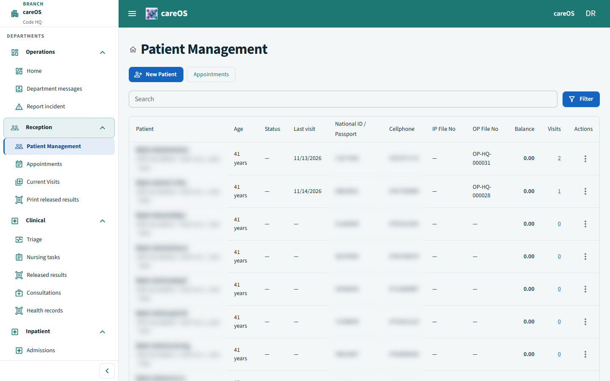
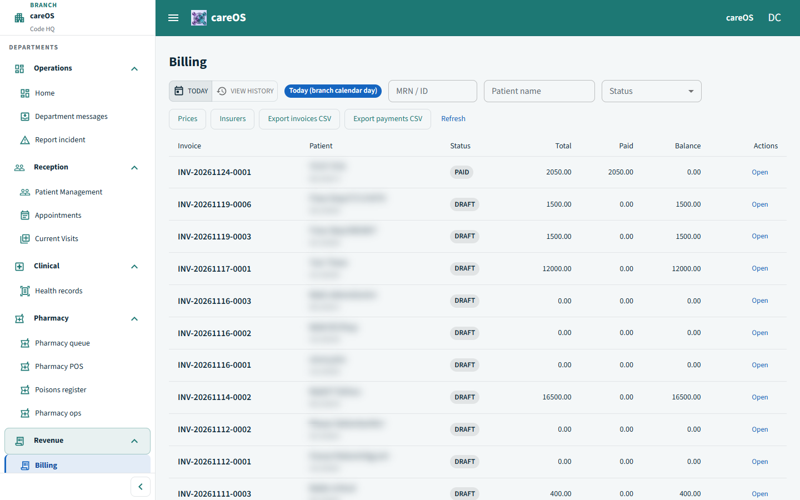

Reception and triage
Patient search and registration, visit queues, vital signs with triage priority, and appointments.
careOS connects registration, triage, consultation, lab, imaging, pharmacy, inpatient care and billing, so a patient’s record follows them from the front desk to the discharge desk.
Each step is done by the person who owns it, signed in with their own role, and every change is kept in an audit trail.
The departments that touch a patient every day, working from the same record instead of separate books and spreadsheets.
Patient search and registration, visit queues, vital signs with triage priority, and appointments.
Structured clinical notes, coded diagnoses, orders and prescriptions, referrals between departments.
Worklists, specimen tracking, results with reference ranges, analyser connection, and release by a second person.
Orders, structured reports, and a recorded process to correct a report after release.
Dispensing, barcode scanning, suppliers and purchase orders, stock-takes and adjustments that need approval.
Admissions, ward and bed board, nursing notes and Kardex, bed-day charges and discharge checks.
Antenatal and postnatal visits, labour and delivery records, immunisation and growth monitoring.
Receipts, price lists, insurers and schemes, M-Pesa payments, and SHA claims from batch to remittance.
Reports and MOH forms, approvals, staff and roles, system health and backups for your ICT team.


Screens from the live demo, with sample patients. Names and personal details are blurred.
Patient records are sensitive. careOS is designed around that from the start.
A plain, step-by-step process. The pace is set with you, around the way your facility runs.
We take you through the demo and learn how your departments, payers and price lists work today.
Your branches, staff roles, services and prices, lab tests and stock items are entered and checked with you.
Each team is trained on its own screens: reception, nurses, doctors, lab, pharmacy and finance.
We start together, stay close in the first weeks, and agree how you reach us after that.
Open the live demo and follow one patient through every department. Ask us for a demo login and we will send you one for each role you want to see.
The demo uses sample patients only. No real patient data is ever shown.
Every user signs in with their own account and role, and sees only what that role needs. Changes to records, and views of sensitive ones, are logged with who and when. Sensitive fields and backups are encrypted, and admin accounts use a second sign-in factor. The system is designed toward the Kenya Data Protection Act, 2019.
Each hospital gets its own installation and its own database. It can run on a server at your facility or on a hosted server, and we agree the option with you before set-up.
When careOS runs on a server inside your facility, departments keep working over the local network. Outside services such as SMS, M-Pesa and insurance claims wait until the connection returns.
Yes. Each branch has its own queues, letterhead and settings, staff can be allowed to work in more than one branch, and management sees reports across branches.
M-Pesa payments, SMS messages to patients, lab analysers (HL7 and ASTM), imaging systems (PACS) and SHA claims. The national health integrations are built against the published DHA specifications and are switched on as each facility completes its own onboarding.
It depends on the size of your facility, the number of branches and the departments you use. Contact us and we will give you a clear quote.
Tell us about your facility and we will arrange a walkthrough.